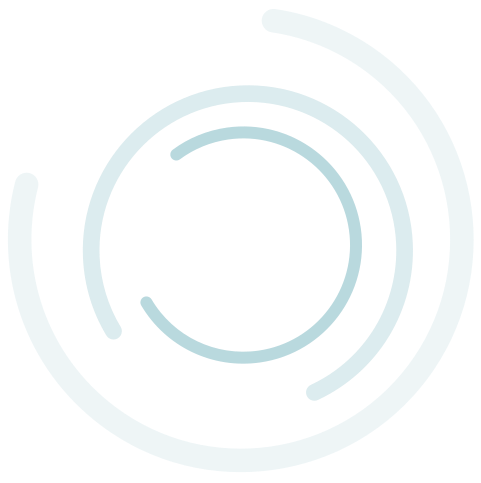

Inside the business of eyecare.
It just isn't ours.
The independent eyecare conversation today is dominated by frame reps, software vendors, and associations — all of whom stay neutral because they have to.
ForEyes sits on something they don't: financial data from ~170 practices, a back-office view most owners never get, and opinions we're willing to put our name on.
Behind the Lens is a monthly publication and blog for independent eyecare practice owners. It lives as a sub-brand of ForEyes Solutions — visually connected, editorially distinct.
Rooted in the ForEyes palette. Editorial wordmark. Yellow promoted from accent to signature. An aperture-inspired monogram nods to the lens without being literal.
Every piece of content lives under one of these seven pillars. They scope what we publish, and what we don't.
Readers learn the rhythm. A practice owner who skims the third issue knows where to find the numbers, the partner, and the close.
An independent, opinionated, practice-owner-minded voice that isn't selling frames or software.
Not a promise — a shape. Headlines that show the kind of publication this is the first issue of.
Four phases across a 90-day runway. Ownership on each. We are not launching a campaign; we are standing up a publication.
Three decisions unlock the 90-day clock. Nothing else is blocked on you.